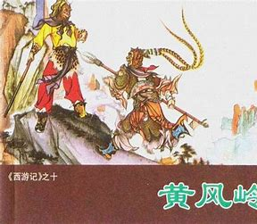

黄风岭故事
原著出处
- 第二十回：黄风岭唐僧有难 半山中八戒争先
- 第二十一回：护法设庄留大圣 须弥灵吉赶黄风
故事梗概
唐僧师徒路过黄风岭，遭遇黄风怪的袭击。黄风怪使出黄风，吹散了师徒四人。孙悟空多次对抗都无法降服黄风怪，最后请来灵吉菩萨相助。灵吉菩萨使用定风珠制服了黄风怪，原来黄风怪是灵吉菩萨的坐骑金翅大鹏。这个故事展现了佛门神通的力量，也暗示了黄风怪与灵吉菩萨之间复杂的关系。
影视对应
- 1986版《西游记》第11、12集：黄风岭
- 2011版《西游记》第7集：黄风怪
唐僧师徒路过黄风岭，遭遇黄风怪的袭击。黄风怪使出黄风，吹散了师徒四人。孙悟空多次对抗都无法降服黄风怪，最后请来灵吉菩萨相助。灵吉菩萨使用定风珠制服了黄风怪，原来黄风怪是灵吉菩萨的坐骑金翅大鹏。这个故事展现了佛门神通的力量，也暗示了黄风怪与灵吉菩萨之间复杂的关系。
灵吉菩萨是须弥山的护法，掌管定风珠。黄风怪原是他的坐骑金翅大鹏，因贪恋人间富贵而私自下界为妖。灵吉菩萨应孙悟空之请下界降服黄风怪，使用定风珠破解了黄风的神通，最终收服了这个不听话的坐骑。这个故事展现了佛门对妖魔的管束，也反映了修行者的堕落与救赎。
定风珠是灵吉菩萨的法宝，能够克制一切风系神通。当黄风怪使出黄风神通时，灵吉菩萨祭出定风珠，瞬间就破解了黄风的威力。这件法宝展现了佛门法器的神奇力量，也暗示了佛法对妖魔的克制。原著中描写定风珠"霞光万道，瑞气千条"，显示出其非凡的威力。
黄风大圣原是灵吉菩萨的坐骑金翅大鹏，因不甘受制于人，私自下界为妖。他占据黄风岭，凭借黄风神通作恶多端。即使是孙悟空的金箍棒和如意法术也无法降服他，最终需要其旧主灵吉菩萨亲自出手。这个故事反映了佛门对叛逆者的惩戒，也展现了妖魔的傲慢与失败。